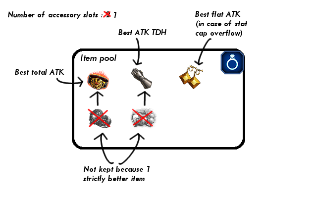

FFBE Equip builder Algorithm
To make the explanation easier to understand and illustrate the algorithm, I'll imagine a unit that can only wear Dagger, Fist and Accessories
Important tool : Item Pool
Algorithm, Phase 1 : First culling
Algorithm, Phase 2 : Calculate type combinations
In this phase, the builder will calculate all combinations of item type the unit can wear. First it will calculate "innate" combinations, meaning what the unit can wear without additional gear, then it will try to add more combination by pinning some available items, to give the unit Dual Wield, or allow other type of item to be equiped (if this option is checked)
Here is the result for my example unit, if I checked the 'Try "Allow use of
Algorithm, Phase 3 : Iterate on type combination and find BiS build for each
That's where the heavy work is done, and when the builder starts to use multiple threads to solve the BiS faster.
Basically, the builder iterates on the type combinations, and for each of them, find the BiS build that use that type combination. It then only keep the best build amongst those builds as the final result.
This phase can further be explained in two sub-phase. I'll explain them by focusing on one type combination :

Phase 3-1 : Final culling
Now that a type combination is fixed, two things can be done :

Resolved conditional items are added to the corresponding Item Pool, and number of item needed are adjusted :
Phase 3-2 : Brute Force, with a grain of finesse
All that is left is to try all the combinations of items kept. It's Brute Force time !
However, Item Pool have another precious feature : you can fetch a top level item from it, and it will update the remaining items. So if item B is overshadowed by better item A, you won't be able to fetch B from the item pool until you first fetch item A out of it. That allows to do a Brute Force approach, but also guarantee than an item won't be tried if all better items are not already used, in order to further improve performance